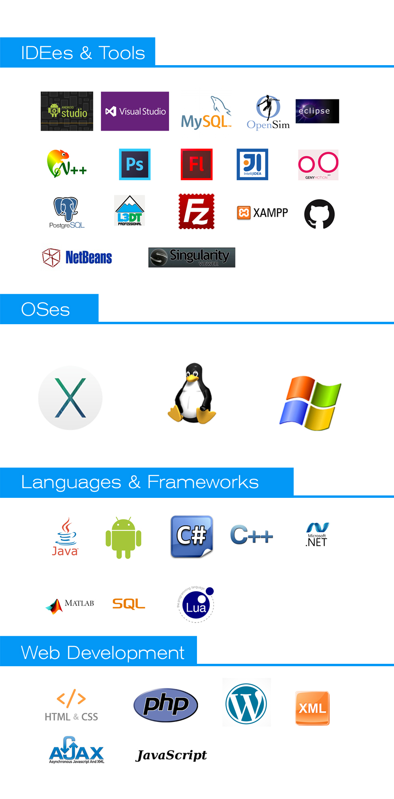

Work Style
My name is Menelaos and this is my website. I have always been fascinated by computers. My curiosity about the underlying technologies
made me experimenting with my keyboard at a young age.
The research I did has shown me many different things you can do with computers
and Programming became my favorite subject from young age. In June 2015, I graduated from University of Piraeus from the Information
Technology department with First-Class grade (Honours). During the study I learned a lot about Computer Science including:
Multithreading, OOAD, Graphics (Rasterization and OpenGL), Networking, Mobile Development, Image & Video Analysis, Machine Learning,
Data Mining, Speech Recognition, Distributed Artificial Intelligence and so on. Every day I try to improve myself. I believe it is
good to keep learning and researching new techniques that add value to projects. I have an unwavering motivation to bring innovation
and quality to software products. I’ve assimilated a strong understanding of a software product’s development cycle, enjoy addressing
new challenges and using new technologies, and am passionate about the development of software products that make a difference. At
this moment I am pursuing my Master’s Degree at the University of New Brunswick under the supervising of Dr. Emmanuel
Stefanakis and Dr. Yun Zhang.
Software Engineering
As a Software Developer, I love to write my code in a structured, clear and concise way so I can organize it better. It eases the process
of transferring a project to another team or revising an old project. Reusability is often on my mind while programming. I recognize
patterns and look for appropriate opportunities to implement an application which can reuse code. I believe that double code means double
maintenance. Maintenance costs time and time is money. Languages and Object Oriented Design are my speciality. I love to see complex
data structures and to think about a way to make the data
flow smoothly through a program which manipulates the data at several stages. It delights me to use encapsulation to create clean
interfaces which allow us developers to put a complicated system behind a door and enable us to start gigantic processes at the press of a
button. I think about optimization. What would make the system perform faster and would also be profitable to implement? This is a common
question in my mind when I develop applications.
Mobile Programming
In January of 2014 I was curious about mobile programming so in I transitioned to Android where I started with Android Studio 0.5, at the
times when it used to be in BETA. I think that Android is the most promising and at the same time most challenging framework I have ever
worked with. The rapidly increasing market and also to the tremendous amount of people that use Android devices, makes it a very promising
Framework to develop at. After spending a lot of time with Android Framework, I feel very comfortable with it and especially with the
Intellij IDE. Apart from computer related work, I enjoy to work in teams and to discuss projects in meetings. It brings variety to a
working day. For example, the design of an application, a bit of planning and market potential of projects interest me. It also gives
me a broader vision on the projects.
Web Programming
In August of 2015 I started working at Hazus Canada, where I have been asked to implement a RESTful based application. The job includes
much PHP, PHPUnit, HTML5 and Javascript. Lately I have been studying a lot about RESTful design & architecture and I firmly
believe that you can build some really powerful and at the same time scalable API's that are accessible to any programmer from any
field. Technologies come and go but strong API's stay; that's what amazes me mostly about the RESTful applications.
Some of the research fields that interest me:
- RESTful Architecture & Implementation
- Object Oriented Design & Structural Patterns
- Graph Theory and Optimization Problems
- Decision Mathematics
- Distributed Artificial Intelligence
- Semantic Geographic Information Systems
- Data Analysis - Data Mining - BIG Data
- Financial Engineering - Quantitative Trading - Computational Economics
